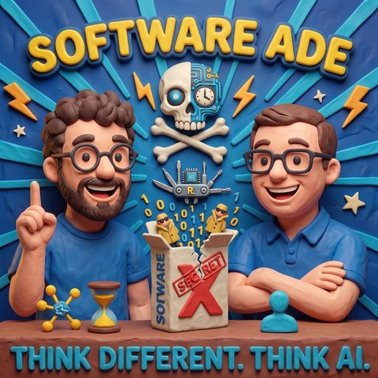

Software Ade
Auf Deutsch lesenTopics Modelle und AnbieterInterfaces und Interaktion
What it is about
What is software still worth when everything can be rebuilt?
Reverse engineering used to be a high art. With AI it becomes an everyday tool, and that calls into question the business model of many software houses. Mark and Jens talk about what software is still worth when foreign programs can be rebuilt in hours. The episode starts with TV habits from Mark's childhood and ends with game ideas and a look ahead to a future episode.
The opening runs through games that can be mixed. Mario in Fortnite, Bubble Bobble crossed with Populous: whoever pulls characters and mechanics out of other games produces combinations nobody has come up with before. Whether that is legal, the two leave open. It is not legal advice and not a call to action, but an observation of what is happening out there right now.
With graphics software such as Figma, a different question arises than whether it can be rebuilt. Why would you copy a tool built for a way of working from 30 years ago? Mark describes how a colleague, with Opus, built an interactive 3D model in the browser in a short time, with dials you operate yourself. The tool is tailored to your own work instead of paying a licence for a general-purpose program.
One experiment goes further: an existing app is rebuilt so that it runs as an MCP server. An AI can then talk to the backend directly, without an interface. A user interface becomes an interface for machines. If software is easy to rebuild, the finished product loses value, and the service around it gains value. Maintenance, adaptation and the business relationship remain. For vendors that means rethinking licence terms and contracts, and perhaps selling advice instead of packages. Existing customers are an advantage that a fresh rebuild does not have straight away.
Old hardware falls under this too. Devices that no longer receive updates from the manufacturer can be analysed and brought back to life. Mark mentions an old speaker with a glowing ring on which he wants to run his own AI voice.
The flip side: whoever has access to good models, tokens and time can use this. Whoever does not is left out. The group that actually builds software this way is small. In the episode's example calculation, an agency for a small app quickly costs a five-figure sum, while the tokens for it come to a few euros. The two see this more as a gap that AI can shrink than one it widens.
To finish, things get playful. Maniac Mansion, Zak McKracken and Manor Lords are on the list. Mark would cross the medieval building game Manor Lords with a global simulation that reaches from the backyard to the planet. The idea of using game interfaces as an interface for AI systems also comes up. For a future episode, the two suggest discussing the skills in your own AI system.
—
Think Different. Think AI. with Mark Zimmermann and Jens Scharnetzki.
Listen: Apple, Spotify, YouTube, RSS
https://think-ai.podigee.io
New episodes first in the WhatsApp channel
https://whatsapp.com/channel/0029VbDJ4ZlGufIrpquad004
If this episode was useful to you: rate us once on Apple. That decides whether new people find us.
https://podcasts.apple.com/de/podcast/think-different-think-ai/id1828021699
Feedback and guests: via the show page.
Transcript
00:00:00Welcome to Think Different. Think AI., the podcast by Mark and Jens.
00:00:07Two tech-loving minds who don't just talk about artificial intelligence. They live it.
00:00:14Here you get clear classifications, real practical insights and a fresh look at what is possible.
00:00:20Understandable, critical, and always with a wink.
00:00:24AI to think about, to smile about, and above all to join in on.
00:00:29Welcome to Think Different. Think AI.
00:00:37And before I say something wrong: Jens, is that you?
00:00:42Of course it is. Who else would it be? Live subtitles?
00:00:45Could have been. Reverse-Engineer-Anything.
00:00:48Could also have brought a new Jens in here.
00:00:50I haven't tried that yet. Nice to have you here, Jens.
00:00:53Thanks, thanks. A little advance note on the show.
00:00:56We're broadcasting live and in color, for the younger listeners among us. That comes from the time when, I may have to admit it, there was no color television yet.
00:01:07That's what people always said back then: live and in color.
00:01:10I still remember two sentences from TV, something like: we have a ... when the presenters on TV called somewhere, they knew in the studio when to switch over.
00:01:22And you're talking to a living remote control.
00:01:26I only remember it vaguely.
00:01:28So if my parents, who are listening too, happen to hear this, greetings from here,
00:01:32meant it differently, that's how it stayed in my memory,
00:01:34that it certainly happened more than once
00:01:36that I was sent to the TV to switch channels,
00:01:39because there was no remote control,
00:01:41and I was basically the human remote control.
00:01:44My father was a magician too.
00:01:46Back then he once made something disappear from the TV first.
00:01:49What I didn't see was that he stretched his arm so far behind the wall
00:01:54that he touched the fuse box, and I was fascinated.
00:01:58Yes, yes.
00:01:59Yes.
00:02:00From the side.
00:02:01That was still the phase when there were no couch potatoes, because you still had to get up to walk over to the TV.
00:02:05Yes, I don't know what vice people had back then, or why people thought, when I was young,
00:02:14the young ones won't amount to anything. That's somehow true of every generation.
00:02:20Somewhere I have a quote in mind, I can't recall it exactly, and then it turned out
00:02:23it was from ancient Greece, from a time long before our world. Anyway.
00:02:28I'd say not everything was better in the past. What's the thing we always keep saying?
00:02:32But not everything was bad either. Come on, we've covered enough general ground now.
00:02:37Let's talk about the value of software.
00:02:44Without wanting to step on anyone's toes here,
00:02:49we had Paula Dauner on, and we also have people in the
00:02:53listener circle who deal with this, and I think that's great.
00:02:55But let's really ask the question: what is the value of software in this time?
00:02:59I came at it through Claude, where a framework is taking off on social media, one that
00:03:06more or less promises we can talk about it a bit,
00:03:09about being able to copy software.
00:03:13Just like that: here's a file, here's a link, I don't even need access.
00:03:20And what kind of blunders come out of that, we can talk about in a moment too.
00:03:23But what does that mean for our time?
00:03:25Or should we first listen to what happened?
00:03:28Gladly.
00:03:29So the topic is reverse engineering.
00:03:32So looking at something and then, in principle, taking it apart
00:03:37to find out how it was actually put together.
00:03:40That's basically one of the high arts in software development, because it's not
00:03:44so easy at all.
00:03:45You have to know: the average software developer doesn't always follow Plan A.
00:03:50So I won't step on the professor's toes, but
00:03:53it can get a little more complicated at one point or another.
00:03:57You resolve to comment every single line you've written,
00:04:01and then you forget it.
00:04:02That's the part people like to forget.
00:04:03After the thirtieth page of code you've written, it's no longer
00:04:06so clean.
00:04:07So it's not so easy to look at a complicated piece of software, where millions of lines of code
00:04:15can easily pile up, and from that mess to work out what this software actually does.
00:04:22Or what does it do in the very, very complicated cases? Because in the last few weeks, complicated games have also been reverse engineered and made browser-capable.
00:04:31What does a character do that is hopping around somewhere in such a game?
00:04:35It's all hidden in the code, and just by looking at the files,
00:04:41as you just described, the source code in those files, to turn it back into a runnable
00:04:47version is in fact a lot of work if you do it without AI.
00:04:53What you said about games, that's what I first stumbled over too,
00:04:57but really about two things. One is this Sony PlayStation thing, whether
00:05:01whoever is taking care of that or not, I don't know, but it's a bit of a hype right now,
00:05:06that not only a jailbreak for the PlayStation came out, but it's also all kinds of stuff
00:05:11that isn't quite right in the head, from PlayStation 5, becomes runnable on the PC.
00:05:17Shout-out: software no longer belongs to you. Maybe the ruler will reconsider that.
00:05:22Another topic. And again, no, again, this happened many, many years ago too.
00:05:28So from the side: yes, one shouldn't underestimate this.
00:05:31By now the kids have even more legitimate tools at hand.
00:05:34But where it really got under my skin with Claude was the mixing of games.
00:05:43And then, of course, you can run around with Super Mario in Fortnite.
00:05:46That goes so far that you don't just have the character,
00:05:51not just the character, you don't just have the sound either,
00:05:54but also glitches like that, quirks from the game you pulled the character out of.
00:06:01Like when Mario goes up the stairs and jumps through the door at the top,
00:06:06and then somehow flies onto the next stage, and that keeps happening.
00:06:12Or that in Super Mario Kart you sit in a sniper,
00:06:18shooting from the east and out of the cars,
00:06:23and you think, damn, how cool is that? Not because of the sniper and the cars, but that you
00:06:28basically have the chance, and I want to rate it at all, am I allowed to do that, and yes,
00:06:33but if you just let the fantasy run free, you can say, I suddenly combine
00:06:40the heroes of my games, my favorite games, everything together, and mix it into a new game.
00:06:47That's a new game experience, and then the question arises of what the games become.
00:06:55We had that in the Gamescom episode, and for a long time, and partly also
00:07:00I'd say there's love in it, at least love for the detail, depending on which game you take,
00:07:04depending on what it's called right now.
00:07:06And then suddenly something comes around the corner and says, I always thought it was a good idea
00:07:12to cross Populous with Fortnite and Bubble Bobble.
00:07:15cross, and suddenly you wonder why your characters are wrapped in bubbles by little dragons.
00:07:20That's a bit wild. We should come back to this topic right away.
00:07:26as you introduced it, what software is still worth. But of course we can
00:07:30also take a small look at it, because of course an explosion of creativity
00:07:35also comes with it again. Because this combination you mentioned,
00:07:39nobody had thought of until now. Licenses are attached, all fine, all good. But
00:07:47of course it's still exciting in a different way, what
00:07:51is possible now, combining the most diverse game characters and game ideas super fast with each other.
00:07:57So I'm very positive about things like this. And I find
00:08:04this could be another... That's already happening, the internet went wild there,
00:08:09so it's an explosion of creativity, whether it's always legal.
00:08:14No, half of it is that what's being made there isn't legal.
00:08:17No lawyers, no legal advice.
00:08:18Exactly, no legal advice, right, we don't know about that.
00:08:21But of course that's not everything,
00:08:24but it shows where we're headed.
00:08:27say, I can by now build pretty much everything I need,
00:08:36whether it's a game or a piece of software. This moment has been reached for now, whether it's always secure
00:08:42built. You know, there's plenty of the other stuff too. Lots on Instagram
00:08:46or elsewhere, where people say, yes, we love Badco, you of course forget, here are
00:08:51the 110 things you forgot. That's how we do security
00:08:54yours not secure or something, right?
00:08:56Stay tuned, then I'll tell you the most important one.
00:09:00Exactly.
00:09:01And accordingly, of course, it's not always immediately one hundred percent secure
00:09:06and clean.
00:09:07But AI can solve that too, and half of it
00:09:11even if we've never done it before.
00:09:12So these are the things now, I say we're entering an age
00:09:17where it's actually not even about this software of value, but
00:09:24it's of course one aspect, but for me the aspect is much more exciting: we have to rethink everything now, because software, just like a game, its developer thought within a certain box, to solve a certain problem in a certain situation.
00:09:39And even if he did it so well that it helps many people, many people bought this software.
00:09:45Now, if we look at graphics software, there was a recent example in the last few weeks, Handcraft or whatever, where someone is basically a Photoshop rival.
00:09:59Damn, I hadn't noticed that at all. Then I'm in on that too.
00:10:03So everyone who thinks we're a decent podcast is into software.
00:10:09Not the Adobe one, it's Figma. Software is Figma.
00:10:16For God's sake.
00:10:17Okay, yes, F-I-G-M-A, spelled out. They also had a funny name, I think, in
00:10:23Germany.
00:10:24They also introduced a whiteboard, a collaboration board, which they
00:10:26called Jam, where you show FIG, Jam, the name of this whiteboard tool from
00:10:32Figma.
00:10:33In any case, I want everything, whatever, it doesn't always work out with the
00:10:35localization of names around the world.
00:10:37That's a tricky business. Back to the topic: all of this can basically be rebuilt now. Does it make sense to rebuild it? No.
00:10:45That makes sense if I want to save money, of course. That's something one could do.
00:10:49What I think is much, much more exciting about this topic is that you can now ask: do I even need this software that already exists anyway? Could I just buy it?
00:10:59Always like that, or do I actually need something else, because it's slowly becoming more of a consideration, that I say,
00:11:05yes, of course it's cool to have a graphics editing tool like that. But honestly,
00:11:10I can already produce almost all the graphics I need with AI.
00:11:15What do I need? I actually need a tool that helps me very specifically,
00:11:19maybe as an editor of this graphic in my personal way,
00:11:25to be able to act on it. And not the way it has been done for the last 20 or 30 years
00:11:30in desktop publishing, where I somehow draw a frame around
00:11:34objects with the mouse, then select these objects, set the color, the line thickness,
00:11:39set the background color and a foreground color. That's basically what
00:11:44these graphics programs have been doing for the last 30 years, with a bit
00:11:48more fancy stuff. So, that raises the question, and I think that's the really exciting part,
00:11:51what I'm seeing right now, Mark, is that we're in a phase where everyone out there can build their
00:11:57own tools for their situation. And those don't have to be the same tools,
00:12:01because that's actually silly. The same tools that already exist, now again
00:12:05rebuilding with AI is nice to look at. But apart from a certain kind of maybe
00:12:12modern piracy, nothing new that moves the world, it only shows at this moment where AI is
00:12:18more capable. That means, in my opinion, zero creativity for the people who are
00:12:23doing it right now. The creativity comes more from what we've now seen in games,
00:12:27that people combine things, or that other people build their own way
00:12:32on devices, on appliances, because reverse engineering works just as well for, no
00:12:38idea, the stereo system at home that's somehow connected, or the light switch
00:12:42that I have in my house right now.
00:12:44I found that really great, because this reverse engineering, so what are the top projects?
00:12:50The top projects don't even start there.
00:12:51Rebuilding Excel, PowerPoint, greetings out there, Dobby or Excel PowerPoint, all of that has been tinkered with by now.
00:12:57No, it was really about old things: reactivating drivers, reactivating connections for old things,
00:13:07bringing back support for old file formats. I actually found it astonishing that this was way up front in the statistics.
00:13:17I noticed that while you were talking I was the old white guy and the uncreative one again, because
00:13:24what first went through my head was what this means for the software market, for licenses, what it means for the software market.
00:13:32And then there's the question of whether companies, let's say in quotation marks, it doesn't matter whether with or without AI, make an effort for software, if
00:13:38yes, I'd have stolen it again or whatever anyway.
00:13:42So, as I said, whether it's legal, illegal, or permitted somewhere in the world, is
00:13:48completely irrelevant.
00:13:49Just evaluate the result.
00:13:50What that means. And my creativity is not that I didn't even try it out,
00:13:57the thing.
00:13:58My creativity was actually a completely different topic: I took an app
00:14:02and said, watch out, don't rebuild the app.
00:14:06So, a bit of Xcode and so on, I can handle that quite well with Claude, I don't need anyone telling me I'm rebuilding an app.
00:14:13My question was: look at the app, rebuild the app for me, but as an MCP server.
00:14:20So that you basically don't have the app frontend, but something AI can consume.
00:14:30And then I thought, okay, I can say it up front: the result worked.
00:14:36And then you basically had something you can use as a tool in Codex or wherever, in the
00:14:44integrate.
00:14:45And then, after you've run a login, you can talk with the backend, which actually
00:14:53would have spoken with me itself.
00:14:54I found the question fascinating, what the backend thinks, so thinking is also relevant,
00:14:59what it thinks, what it speaks with, whether it was that Android version that served as the basis,
00:15:04and whether it noticed, haha, that's something else. And that's also
00:15:09not meant as a call to copy, but the point is, suddenly you get conversions like this too,
00:15:14that say, I have a result here, damn it, make it runnable again,
00:15:20make it run on another system, the way PlayStation players suddenly
00:15:24run in the browser, suddenly an app runs as an MCP server. Things are changing extremely right now, and you recently showed me various videos of someone presenting knowledge with HTML pages, maybe run that again.
00:15:43You can explain that better than I can. But if you now go and say, okay, I like the idea, I want to apply it to another topic.
00:15:49Dear Claude, or by now Claude can surely do a lot on its own, let's leave that aside, but dear AI, with whatever tools,
00:15:57orient yourself on that, bring this and that level to it, add something new to it.
00:16:01I think we'll experience more and more that this exponential growth in flooding continues at high speed.
00:16:11That it really picks up speed now, because software is not just copied, not just rebuilt, because software gets merged, because software, let's call it a different state of matter, so a frontend becomes an interface, an interface becomes
00:16:27I don't know what.
00:16:29So, suddenly completely new things will emerge.
00:16:33The question that stays socially critical for me, of course, is
00:16:35what does this mean for the people who today are, well, screwing things together?
00:16:39What does it mean for people who today invest in software?
00:16:43What does it mean for startups, when, no idea, what happens?
00:16:47Suddenly anyone can
00:16:50rebuild and replay whatever character.
00:16:54What does that mean for copyright?
00:16:57I'm not allowed to copy Lara Croft,
00:16:59but theoretically, I could, theoretically, not call it up, rebuild the whole game and
00:17:05just leave out the textures.
00:17:06Is it still Lara Croft then, or is it like Super Mario back then, what is that?
00:17:11Yes, so suddenly it gets really wild.
00:17:15Definitely.
00:17:16And what I wanted to mention briefly, what you just wrote, this example, there
00:17:21we can also put the link in.
00:17:22That's a colleague who really right now with Opus, really very quickly,
00:17:28three-dimensional and so on, clearly understandable visuals, fully, which you can
00:17:35fully turn in the browser, these things you then build.
00:17:37So he built something like a cardiovascular simulator, like a
00:17:45erosion that happens in a valley when a river winds through it, and how
00:17:49a turbine, how a rocket turbine works.
00:17:52All these things, you can unfortunately play around with them, you can from all
00:17:56So, interactive information graphics, three-dimensional, in the browser.
00:18:03And he had, in principle, a bit of, that was for me, and then we both also talked about it, it was a bit of the occasion,
00:18:08when I saw it and all the dials he built in and that I always built it so fast,
00:18:13we thought, that's actually a good idea, to say, okay, why not build it out in principle for your workflows,
00:18:21that you have, which I just described.
00:18:23actually still learn Figma or Adobe programs somehow to edit graphics. Or
00:18:29don't I just say to myself, look, if I can build such an interactive module now, to
00:18:34edit a cardiovascular system, then I'll also be able to build an interactive module to change the color
00:18:38of an image from black to colorful or introduce some style. Or to say
00:18:46make a three-dimensional object out of this two-dimensional one. And I can
00:18:50do that with my own sliders, because I might still want to fine-tune it a bit
00:18:54and every time by text again, maybe with the AI, the prompt image
00:18:59I build myself a kind of own tool, and that's why it fascinated me so much, and that's
00:19:03I think right now it's a bit of what I notice, what I see, what's going on out there
00:19:07is happening, and of course it has an impact on the software industry as it currently
00:19:14still works. It will still be able to keep working that way for a while, no
00:19:18question about that, but let's maybe slice this a bit more. When I introduce software,
00:19:23for example in a large company, then there's often a big cost driver as well,
00:19:30hidden in it: that this software only fits the respective
00:19:37company maybe 80 or 90 percent, depending on the skills of the people in the company, who first
00:19:42have to be trained, or that some topics actually still have to be
00:19:46ported differently, other data has to be connected, then you see
00:19:50that the structures are maybe a bit different from how the workflows were.
00:19:53That doesn't fit exactly, the way the software designer had imagined it
00:19:56or the big company that came up with it.
00:19:58And a lot of money is then invested in that, in success managers,
00:20:04people who come into the company to help it with this software
00:20:09learn and adapt.
00:20:10I'd say that's already a first big lever for the software companies too.
00:20:14Well, to think about how I can actually take a different approach in the future, by making this software much
00:20:23more personalized for the respective company, because I simply think, wow,
00:20:27look at what people outside can do if my software can basically be fully reverse engineered.
00:20:33So why not offer it as a service, for example? I say, dear company X, dear company A, you get here
00:20:40a proven product that has run stably for years, developed to software development standards, that is secure, that you may already use or have heard is used well at other companies.
00:20:52We can personalize it perfectly for you, so the phase in which you have a long work phase gets much shorter.
00:21:01And your processes are much shorter afterwards too, because this software keeps adapting to you, because we can keep re-evaluating the topic with AI help.
00:21:09Let me put it this way: it's a change in software, where you may not need as many people for training anymore, because training will decrease, but you can then use those people for other things.
00:21:21So, that means you have to adapt. That was always the case when progress came. We all know that with AI it has become a bit
00:21:28crazier, that things happen quickly, but there's really a lot of upside in it, also for existing software users out there, not to just throw in the towel and say,
00:21:39yes, sorry, now everything can be reverse engineered, we're closing up shop because anyone off the street can rebuild our software
00:21:46I don't think there's also a chance in continuing to say
00:21:49yes.
00:21:50Business isn't just about setting up a tool, it also includes the business relationship I have with someone.
00:21:56I have that, and it's an asset that many people who are only now rebuilding a new software
00:22:01don't have yet. You can use that really well for a while and position yourself in this market, to learn alongside it
00:22:08how this software market can work in the future, because I don't think, and
00:22:16correct me if I'm wrong, that every software in every situation will now always be
00:22:23automatically generated by AI, even though our beloved NVIDIA boss once said that in the future
00:22:29everything will be generated like pixels. Yes, that may be in some distant future, but is it economical
00:22:34that we say everyone in the world now builds their own word processor, or their own
00:22:39adapted word processor, if you like. No, probably not, to be honest. It's
00:22:43sensible that, say, someone builds a writing document or writing editor software
00:22:50that is perhaps better than established ones. But not everyone has to rebuild. I
00:22:55think there's still time and room in there, and music in there,
00:23:00to say, yes, I have a piece of software here for you, whether it's now made by AI
00:23:05or not. It doesn't matter, but it will help you in a certain
00:23:09situation. Feel free to pay a few euros so you're allowed to use it.
00:23:14That will go on. I just think the way we build software will
00:23:18change again, because the time when you say, I now have a project,
00:23:24this project is a piece of code. This code is used entirely, in the website,
00:23:32in one piece, no idea, a kitchen appliance or whatever. And then you sit there with
00:23:38big teams in rituals together, and you build for about a year, and so on,
00:23:45and you look forward to the release like, because suddenly, no idea, Apple brings out an operating system
00:23:49as every year, and that it gets modernized a bit in that direction, so you see things faster
00:23:58adaptations, you see takeovers of topics faster, along the lines of, yes, who knows?
00:24:05People, a fictional example: you now have macOS and Windows, and there are people who have macOS,
00:24:12but still miss Windows when they see Windows' Explorer, that
00:24:16and the Type Manager, because the Mac finder can't do that.
00:24:19Now as a user you're basically able to say,
00:24:23we need a thing like that which looks like the Explorer, I want that for the Mac.
00:24:26You could also do that as Apple, you could do that before too, but you had
00:24:30perhaps limited resources, time, I think, I'm not going to rebuild that, and the
00:24:35finder is one of the peculiarities of my operating system, I'm not doing that,
00:24:39I don't want that, I can't do that, I have no time or whatever.
00:24:41And I think at that point we'll experience a change,
00:24:45which ends in an acceleration again, because suddenly the possibility, how long does it take
00:24:51between having the idea, a vision for my product, to, it's tested in 40,000
00:24:58different variants, you run your tests or whatever, after the engine, a fixed idea
00:25:03on Friday in the product. So you have this possibility now, and you can test things much more easily
00:25:09you can simply create facts, and if it doesn't fit, I change it again.
00:25:15That's a much more dynamic field, which you can, in quotation marks, run with fewer people in a shorter time
00:25:20run. And I think we'll notice that. No matter how big or small it is,
00:25:29whether you're a consultant or a software maker, that will change it, and with it also
00:25:35make the basic question even harder for people who say, but that's
00:25:40handmade here, that's crafted, that's, I need the question earlier, when you say,
00:25:47you build software, I need four weeks. People thought, why do you need four
00:25:53weeks, the screens are already done? Yes, because I still have to do this and that. Today someone says
00:25:57I still need four weeks, he says, why? You don't even have the screens yet,
00:26:01but it doesn't matter either, everything's done by this evening anyway, thanks to AI, what more
00:26:04do you want. That will of course change, the cycles are definitely shorter, and I
00:26:13think I'd also say that with the classic license sale, often
00:26:20in the corporate environment, software licenses are then often sold for one, two, three years, or often
00:26:27longer. I think this will partly become an exciting question for the
00:26:33one or the other, the scissors. How long will I still buy software for? So something will change there.
00:26:39Something simply changes. The cycles will partly, I think, become shorter. What I think
00:26:43could also happen, and might also be a chance for one or the other,
00:26:46is to say, yes, you don't buy a finished piece of software at all, we, I simply deliver you
00:26:50a solution. I'm simply the one with my software who helps you, in your
00:26:56workflow, to always have the right software solution. Because we both know
00:27:02that in this AI world, everything may be different again in five months anyway,
00:27:08I simply sell you my consulting contract, and no longer a fixed piece of software at all,
00:27:14for the sub-area of this assignment at that moment. And that then scales, because I'm a software house,
00:27:18I have the people, I have basically the software engineers, I have the access managers,
00:27:22who can be on site with you and watch how software is actually used,
00:27:26which software your internal people basically have to access things. Let
00:27:32me in your house, or rather in your company, and I build with my
00:27:38two-year release cycle, which I have, you basically get 400 versions of this
00:27:44software over the next two years. And you'll probably end up using it completely differently at the end of those two years
00:27:48than the software solution you bought on day one. So I have something like that too,
00:27:52how can I not. I think we'd have to think about such business models now,
00:27:55how can that work. There are new contracts that have to be made there,
00:27:58because you don't simply buy the package anymore the way you might have been used to before.
00:28:02But I think there's definitely, and it's always been a topic, as I said, now
00:28:08it's a matter of trust, of course, too.
00:28:10Do I trust some software first, one that somewhere was quickly reverse engineered,
00:28:15or do I rather trust the software partner I've already
00:28:19worked with for a little while.
00:28:21I think the competitive pressure in the market is coming, the expectations will rise,
00:28:24at that moment, also regarding pricing.
00:28:28I've just given a few hints on how you might be creative there.
00:28:31Still, to cut off a piece of the cake, but of course there will be a
00:28:36change there. And yes, I think that's really now, it's been this way since the
00:28:43AI phase. I mean, the software industry was the first to realize that
00:28:48producing pure crap, which was best sold, as it used to be,
00:28:54in a shoebox and inflated with CDs. That phase is over.
00:29:00You can't go back to it now, however you'd like. It will of course still take a
00:29:05while. We're not all suddenly different right away. But how does this phase end now?
00:29:12Because you can actually say, that can happen differently. The phase of monthly prices for
00:29:18software is possibly over too. That means the actual product is no longer
00:29:25the decisive thing. The product, when it's digital, is very quickly copyable today. Physical
00:29:31products we also see, it comes gradually, and at some point they too will be very quickly copyable,
00:29:36but above all digital products are, at that moment, the product is no longer worth that much.
00:29:42And the product, if it's software, simply isn't worth much anymore. The service
00:29:46around it is what's worth something. The maintenance, the adaptation, that costs us money and time in
00:29:51the moment. And for me that actually belongs to a complete product development,
00:29:56that we forget, some still do. And that's also where the person
00:30:04tends to look at the one-time price rather than the long-term service at first,
00:30:10the motto being, look, it costs 80 euros and not 300. For the 80 euros I can
00:30:18buy it three times over before I reach the 300. Why on earth would I
00:30:23buy it again? Take the expensive product, that's, I mean, that's very simply
00:30:28calculated now, I admit. But as you say, that will bring movement.
00:30:34Yes. Definitely. Now let's take the microphone away for a moment. Definitely, but on the other side,
00:30:40that also... By the way, the AI cuts that out again. That means the pause was
00:30:43noticed by someone, and you say the microphone is gone. So Jens, in that moment, has a
00:30:48really long pause, and I briefly worried that he was gone. No, all good. But
00:30:53you see, that shows we're still real. Here real handwork is still
00:30:57being done. When we talk here, mistakes happen too, I'll slip away for a moment
00:31:02with a mic button. I've found the following for you on the internet. Oh, right. I've
00:31:08found the following for... That's Siri, when she doesn't understand you. Damn, Agnes, I wanted to
00:31:12bring your little joke and you're shooting me down like that. So carry on. Which
00:31:18series? Siri, not series. Siri, when she... Ah, Siri, Siri. You'll work on our noodles
00:31:26maybe. Yes, so, in any case, let's come back to reverse engineering,
00:31:35which also simply offers possibilities. So we've now, I think, beaten the
00:31:38topic of software industry changes to death well enough.
00:31:42That's part of this AI revolution, and that should be clear to the last person now too, since
00:31:48the last two, three weeks, since this topic became so hot. The exciting thing
00:31:51really is, what we perhaps have overlooked a little so far,
00:31:55that it's not only when you think of reverse engineering, that you think
00:31:59actually always of the digital products you see, because we
00:32:03just had this topic of hardware too, where software is partly
00:32:08inside, chips are running there, things on it that
00:32:12partly connect to the internet or other things. All of that is
00:32:16of course also in principle reverse engineerable. So that means old
00:32:20products I might have at home, where a software provider or
00:32:23the product manufacturer from back then says, you know what, that device, an old fridge,
00:32:28or something else, I won't wait for that anymore, there's no update for it anymore, something else
00:32:32for it. All of these topics can now basically be, whether there's somehow a connection
00:32:37there, also reverse engineered, and I can write my own software again
00:32:42for other things. I have, for example, a small box lying around here somewhere
00:32:45from a larger provider, a small one, where some poor pseudo AI voice used to run
00:32:49on it, which I wanted to answer me back, a few years ago.
00:32:55They're good though, because they have a nice ring that lights up, and when
00:33:00you address it, they actually have decent quality for their size in the speaker.
00:33:05quality in the speaker. I'll just flash this thing now, reverse
00:33:10engineer it and put my own AI variant on top, and connect that with my
00:33:14Second Brain and co, so that in principle I can use it at home to
00:33:17I think that's a bit cool. You know, for this product I was already, years ago...
00:33:21I think that's a bit nerdy too, but that's...
00:33:25Yes, but it's awesome. You know, I briefly considered it,
00:33:27because I've always wanted to finally build a physical product here with AI,
00:33:31and I'd already gone looking for stuff again, which microphone would you buy,
00:33:35and whether I should then also buy a 3D printer, so that in principle I can
00:33:39pack this microphone and the speaker into a nice 3D case.
00:33:44Yes, that was again one of those things that suddenly feels like a huge project.
00:33:49So then I stumbled onto something else through this reverse engineering story, and
00:33:53I thought, well, I won't go up there, I'll simply take this device
00:33:58from the manufacturer, which I won't name, which I have here at home, and see
00:34:03whether I can also get it working with the help of Claude.
00:34:06The device is already 20 years old, and can maybe be made fit again,
00:34:09and if we weren't using it anymore, so I actually find it
00:34:12quite nice that old hardware can be given new life.
00:34:18And that's also one of those things.
00:34:20We were just talking about how software can be personalized,
00:34:24that it can adapt to my needs.
00:34:27And that just goes further.
00:34:28I can really also do hardware in ways it was perhaps never intended for, or
00:34:32perhaps with the one device, everyone probably knows this, whether it's an
00:34:36intelligent vacuum cleaner, a fan, or whatever else in your household.
00:34:41The software solution, the application you sometimes got for it, was
00:34:46sometimes also just semi-sexy, to be honest. That may now be
00:34:52yesterday's news for one or the other, because we can simply go
00:34:56and say, for this hardware solution I have, I'll now just build my
00:35:01own ventilation software, in my own design, with my own cloud. And
00:35:06then I find that's just cool, what I see there. And I could then look at my own house
00:35:10maybe in 3D and see where the various devices are currently using which
00:35:15energy, which airflows they produce, whatever. That's simply nice.
00:35:19I just thought, I have here, in front of one of those Dyson hot-and-cold air blowers, what I
00:35:26could do with it, while I have my little children's AI bot running on my watch,
00:35:34I wanted to show a little prototype to a colleague, along the lines of,
00:35:39oh yes, look, it can ask questions in a child-friendly way, they wanted that kind of thing.
00:35:43Not because I wanted to release it, but he had the idea to build something there, and then I thought,
00:35:47I'll tinker a prototype for him, so he can take a look at how it feels.
00:35:51Another topic, I don't want to digress, but that too is the source of possibilities.
00:35:56But how do I now phrase this properly, so I don't get tangled up,
00:36:01so that it doesn't end up saying, Mark has pushed the village. Access to education, access to possibilities,
00:36:07access to tokens, access to good models, increasingly determines what you're able to do
00:36:16and where you possibly lack knowledge of how it works, or where you maybe don't
00:36:22know that it works that way. I mean, we mustn't think
00:36:27that just because we have a podcast and talk about how Excel and PowerPoint are being copied, and
00:36:33what that means for software development and how processes
00:36:37change, there aren't still people outside who on one hand are receptive to the thing at all,
00:36:42with the motto, oh, I can save a subscription price that would be very hard for me to afford
00:36:48in my wallet, or who only see the results and perhaps neither
00:36:53can assess it. What does that mean socially and politically? Simply use it,
00:36:57simply apply it, because they know what solutions there will be in the future, or
00:37:01simply don't notice any of it at all, because they're cut off from empowerment and
00:37:06access and who knows what, regardless of age, money or regions of the world. I think
00:37:13the scissors of knowledge and possibility are going to cut in properly again.
00:37:18More than just, you can't see my air quotes, so I'm mentioning, more than just that topic,
00:37:25which parental home, with which equipment, as a young child or whatever, to have access to such things, it's all going to get much, much harsher.
00:37:35Yes, definitely. Yes, totally. I've recently come across the other Karpathy again, we've already cited him in the show as one or the other, and he was also, sort of, the name giver for this Second Brain topic.
00:37:50I haven't been able to find the tweet so quickly, unfortunately. But I had to
00:37:54look it up. And so I can't really say the numbers 100% exactly now, because I'm doing it wrong anyway. But the gist was that he says,
00:37:58we're of course still early. That means, and we're a small group. We have
00:38:02by now, I think, admittedly, that a billion people have access to
00:38:07AI, but that billion is then also more in the area of chatting.
00:38:11And then there's a smaller group that perhaps deals with
00:38:17writing code. And another small group that perhaps deals with the topic
00:38:21of agentics. And then another small group that really, in principle, says,
00:38:25yes, we also need to rebuild all software again. What we've just been describing here
00:38:28has of course something to do with that. Ah, whether I'm privileged enough to have the time to
00:38:33engage with these topics. How in principle I am, through my job
00:38:40or in private life, able to afford all of these things in principle.
00:38:45No questions at all. That's of course completely right. But in spite of that, the needle
00:38:48does of course move in the direction that more becomes possible with it anyway. We
00:38:54have just described that, we can say that software too that I used to have to buy
00:38:59costs money too. And if this software solution,
00:39:03which I no longer have to pay expensive money for, because, whether I now reverse
00:39:08engineer it and get the same product cheaply, or can build something in between with AI,
00:39:13which perhaps saves time and money, because I don't first have to load a Word document, whatever,
00:39:18back and forth to Drive, convert it into a PowerPoint, in one
00:39:23transaction, and afterwards it became a requirements document that then
00:39:28had to be turned into software again, another program written in code, that's also weeks
00:39:32and days of work that went into it. Such things are of course then,
00:39:37and days of work went into it. Such things are of course then,
00:39:42possibly also in that situation possible for someone who hadn't
00:39:47that grind. They of course have to spend money on
00:39:50tokens, but that's by far less than what he would have spent
00:39:55if he had sat down and said, now
00:39:57I want my own app builder for my flea market, or my
00:40:02flower shop. Then 10,000 euros would have been gone yesterday. Today and tomorrow
00:40:09that's perhaps a few hundred, if at all, maybe just 10 euros in tokens
00:40:15that he has to spend to build his solution. So, I think, yes, you're
00:40:19completely right. That there's still a gap in principle. But this
00:40:25gap, in my view, closes more through AI than through anything else. And now
00:40:31people may stone me for this, but I think AI can really help there.
00:40:35Positively, I want to paint a picture in everyone's head.
00:40:40You've just given me a shower moment.
00:40:43No, we didn't shower during this podcast,
00:40:46but while you were talking I experienced mental relaxation.
00:40:51And an idea came to me that I'd test with Claude, or could, or where.
00:40:57My no one puts it that way, like I know someone who would try it out, if it were so, and so he thinks.
00:41:04Imagine, you say there are code management systems, let's call GitHub as an example.
00:41:10And there are systems like OneDrive, Dropbox, Box, blah, blah, blah.
00:41:15What if you asked the system, let's do something like file management with Git functionality.
00:41:23So versioning that's so easy to access. I think that's where the nerd heart could be very happy.
00:41:30Let's see what comes out of that.
00:41:32I think we should always make an episode, not along the lines of what have we all rebuilt,
00:41:37but what helpers have we actually built, what skills do we take into our AI system.
00:41:42We should definitely always do an episode about that too.
00:41:44I've said that very often too, and here again I have to apologize,
00:41:47that's probably the constant hour. In truth it's ten at night, I'm an old man, I have to go to bed.
00:41:52Hm. We should definitely do that too.
00:41:55But before we do that. Jens.
00:41:57I started with the sentence, Jens, is that you? You've been constantly
00:42:02we presume, also because of the microphone business, that we picked that up.
00:42:07If you allow this pleasant atmosphere, which games would you cross?
00:42:14Oh. I have an idea.
00:42:16Oh, that... Yes.
00:42:17Yes? I'm not saying.
00:42:19Which I'd cross, so do you have an idea what I'd cross, or what you'd cross?
00:42:24I have an idea what I would cross.
00:42:27Okay, good, then let me think for a moment.
00:42:30And then I'll pass the ball back first, because the question is so good I don't want to answer off the cuff.
00:42:35The answer also came to me while I was asking, yes?
00:42:39I would... Warning, very long, because I'd cross Maniac Mansion and Zak McKracken.
00:42:45Maniac Mansion and Zak McKracken? Okay, interesting.
00:42:49Interesting.
00:42:50Why?
00:42:51In Maniac Mansion you had a chainsaw.
00:42:54In Zak McKracken the gas for the chainsaw was in the motor home on Mars.
00:43:00But there was no chainsaw.
00:43:02I'd really love to see what you could do with the chainsaw in the game.
00:43:06Are you sure you didn't have a chainsaw?
00:43:09Yes, okay.
00:43:10That was nerdy.
00:43:11But couldn't you, on Zak McKracken, on such a console, play Maniac Mansion
00:43:18Maniac, human chair?
00:43:20Yes, but you can't bring the gas into it there.
00:43:23That's right, that's right.
00:43:25Good.
00:43:26I'd have thought more of something like that.
00:43:28And that was in Edgar's room.
00:43:30Mhm.
00:43:31Whatever.
00:43:32Yes.
00:43:33I'd have thought more of something like that.
00:43:35Yes, right.
00:43:36Wrong, with Day of the Tentacle, where that worked.
00:43:38That wasn't very good.
00:43:39Ah, okay.
00:43:40Yes, very good.
00:43:41You sent devices in front of the puzzle.
00:43:43I'd have crossed something like that, the...
00:43:46I'm a big fan of Manor Lords, a simulation game still in the early stages, built in a medieval style,
00:43:56rarely built, yes, it's still in early access, so not quite finished and therefore always a bit limited.
00:44:03I would, I would do that with such a,
00:44:06yes, with
00:44:08interestingly, with a, oh, now I could swim, with such a, with such a global
00:44:15simulation, like SimCity or something. You know, you can say, because you can
00:44:19with Manor Lords more in a small back area, very, very small, down to the individual
00:44:24farmyard, and decide what's grown in the individual farm, in the backyard basically, whether chickens or
00:44:29pigs are raised, currently being kept and repaired, or whether carrots are grown there.
00:44:33With such a larger world simulation, then you can basically conquer the whole planet
00:44:39step by step. That's combining for you, I find that
00:44:43very, very nice, because there's always only one of the two. You know, where you
00:44:46move the big troops on a very large level, on a hexagon level, and the cities then
00:44:50are only ever roughly simulated? But you never really get both. That
00:44:55would be what I'd do, for example. Well, but only because you asked, so only
00:45:01because you asked me like that, if you had asked me what I'd want to learn from the
00:45:07reverse engineering approach to then make a really new, cool game.
00:45:13Then it would more likely be some really cool space simulator with combat content,
00:45:19which doesn't exist yet.
00:45:21Actually, I'm now considering whether I should build my own game now.
00:45:26Because, interestingly, we talked about that in the Gamescom episode too.
00:45:30Through the topic of reverse engineering, the momentum in the games industry is shifting.
00:45:34We said in that episode that the games are still very, very cautious about the topic.
00:45:40How much software may be developed with AI, and how do I handle that in public.
00:45:46Because so far there has been a super backlash from the game studios, because they didn't want that many AI-generated contents in them.
00:45:52Now the games suddenly see, wow, what's possible there.
00:45:56I can run around with Super Mario in some shooters, which is fun after all.
00:46:01And then play it freely in the browser world.
00:46:04Microsoft was, I think, the first to react, the Microsoft lab
00:46:08is fully behind this topic and wants to look at it very quickly,
00:46:11so that one can say, how can we now combine games from
00:46:15our games we've released much faster, in principle to put
00:46:18the temptation in front of players, to create new
00:46:21things with them. So a lot is happening there. You have creators who
00:46:25generate their own game worlds, and I think the games industry is
00:46:29going to adapt to this very, very quickly.
00:46:32...adapt. And that's usually how it goes when old software, I call it software too, the old software houses with normal software for normal people, and always play something a bit different.
00:46:43I think we'll see the cool ideas first in the games industry, in the media industry, which can then be carried over to the normal software industry half a year or a year later.
00:46:56So much for the word from Sunday now.
00:46:58What about the game with AI and people, which you recently showed me?
00:47:03AI with people, I showed you many of them, I don't know.
00:47:07Yes, AI-human, working and...
00:47:10AI-human, working, working, where does the Dörger come in?
00:47:14Yes, maybe it'll come back to me at some point.
00:47:16That was just because I wanted to look it up again, sorry, the private question.
00:47:20At that point, maybe, we've just, when Michael Röbert is busy,
00:47:25it's still a question of licence, so it's not a call to legalize,
00:47:30build and mix what you want. Yes, from that side, as I said, no legal advice,
00:47:35no call to commit crimes or anything, it's just what's happening out there.
00:47:41I also think that what you said, that in the games industry and footwear,
00:47:46firmly, if you had asked me what game I'd build, then I would have picked up
00:47:51what you once mentioned, whether game interfaces could become
00:47:57interfaces of AI systems, whether one could say, take
00:48:02management in a city and build an interface for yourself out of it.
00:48:07For the cloud or something like that, I'd have found that really exciting.
00:48:11But before we talk ourselves into a corner, Jens, time can't be
00:48:16reverse engineered as of today. We're now at 49 minutes on the clock.
00:48:21I'd say we put a little button on it, maybe a bigger one, a nice one, whatever. We can then maybe
00:48:26also reverse engineer that later. No, it's okay, we've done enough of that now.
00:48:32We're building that with the ad-toker. Whatever, you wanted something physical.
00:48:35I'm looking forward to your game.
00:48:39I'm looking forward just as much to the next episode with you, and Jens, at this point
00:48:44I'd say, let's say goodbye to our viewers, listeners, or whoever.
00:48:49If you liked the episode, leave a like.
00:48:51Recommend us, tell others about it.
00:48:53The more people hear us, the more they can take part in our mental outpourings.
00:48:58If you liked it, tell your friends.
00:49:00If you didn't like it, tell us.
00:49:03And at this point we wish you a nice day.
00:49:06Until next time.
00:49:07Ciao.
00:49:08Ciao, ciao.
00:49:11Welcome to Think Different. Think AI.
00:49:14The podcast by Mark and Jens.
00:49:17Two tech-loving minds who don't just talk about artificial intelligence, they live it.
00:49:23Here you get clear classifications, real practical insights and a fresh look at what is possible.
00:49:30Understandable, critical, and always with a wink.
00:49:34AI to think about, to smile about, and above all to join in on.